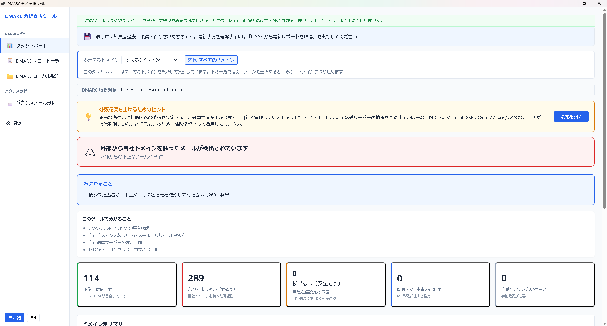

6 分類の読み方
本ツールは DMARC 集約レポートの各行を 6 つのラベルのいずれかに自動分類します。判定はルールベース（決定論）で行われ、同じ入力に対して常に同じ結果を返します。AI 推論やクラウド解析は使用しません。
判定に使用する情報
- SPF 認証結果（pass / fail / softfail / none など）と、エンベロープ From のドメインがヘッダー From のドメインと一致しているか
- DKIM 認証結果（pass / fail / none など）と、署名のドメインがヘッダー From のドメインと一致しているか
- レポートに記録された適用除外の理由（転送
trusted_forwarder/ メーリングリストmailing_list） - 送信元 IP と、設定画面に登録した自社メールサーバー・既知の転送サーバーの IP 範囲、および既知の送信サービスとの照合
- レポートの XML を読み取れたかどうか
SPF と DKIM のどちらかが pass し、かつドメインが一致していれば、DMARC は pass（「正常」）です。どちらも満たさない場合が DMARC の fail で、残りの 4 分類のどれに当たるかを判定します。
6 分類の判定条件と対応の目安
判定は上の行から順に行い、最初に当てはまった分類で確定します。「対応の目安」と「手順の要点」は、アプリの詳細画面に表示される内容です。
| 分類 | 判定条件 | 対応の目安 | 手順の要点 |
|---|---|---|---|
| 読取エラー | レポートの XML を読み取れなかった。 | 今週中に対応 | 元のメールから添付ファイルを再ダウンロードし、ZIP / GZ を展開して XML を確認する。問題が続く場合はレポートの送信元に問い合わせる。 |
| 正常 | SPF または DKIM が pass し、送信元ドメインと一致している（DMARC が pass）。SPF が fail でも、DKIM が pass してドメインが一致していれば正常。 | 対応不要 | 定期的な確認を続ける。DMARC ポリシーが p=none の場合は、段階的な強化を検討する。 |
| 設定不備 | DMARC が fail し、送信元 IP が設定画面に登録した自社メールサーバーの IP 範囲に含まれる。 | 今週中に対応 | 送信元 IP がどのサーバーかを特定し、サーバー管理者（自社 IT またはメール運用ベンダー）と共有する。SPF レコードに送信元 IP を追加するか、DKIM 署名を有効にする。サーバーの停止は不要。 |
| 転送 | DMARC が fail し、自社メールサーバーには一致しないが、レポートに転送・メーリングリストの適用除外の理由がある、または送信元 IP が登録した転送サーバーの IP 範囲に含まれる。 | 対応不要 | 特に対応は不要。件数が急増した場合だけ転送経路を確認する。転送メールをブロックすると、メーリングリストのメールが届かなくなる。 |
| なりすまし疑い | DMARC が fail し、自社メールサーバーにも既知の送信サービスにも一致せず、転送の手掛かりも無い。 | 早期対応 | 詳細画面で送信元 IP を確認し、自社や利用中の SaaS のものでないかを確かめる。正当な送信元でなければ DMARC ポリシーを quarantine に変更し、問題がなければ reject へ段階的に移行する。いきなり reject にしない。 |
| 要確認 | DMARC が fail し、既知の送信サービスには一致するが、自社メールサーバーにも転送にも当たらない。 | 今週中に対応 | 送信元 IP が自社のサーバーか確認する。自社なら設定画面の「自社メールサーバーの IP アドレス」に、転送サーバーなら「既知の転送サーバー」に登録する。不明ならネットワーク管理者に確認する。 |
詳細画面に表示される内容
レコード一覧で「詳細」を選ぶと、次の項目が表示されます。
- 結論と何が起きているか
- 具体的な対応: 手順、対応の目安（早期対応 / 今週中に対応 / 対応不要）、なぜこの対応が必要か、注意
- DMARC で対応できること / 防げないこと
- 技術者向け詳細: 送信元サーバーの IP アドレス、メールの送信元ドメイン、該当メール数、SPF / DKIM の結果とドメイン一致の有無、DMARC の結果、判定根拠

DMARC で防げないこと
DMARC は、自社ドメインを名乗るメールの送信元を検証する仕組みです。次のような攻撃は DMARC の対象外で、本ツールの分類でも検出できません。詳細画面の「DMARC で対応できること / 防げないこと」にも、分類ごとに表示されます。
- 自社に似せた別のドメイン（類似ドメイン、typosquatting）からの攻撃メール
- 本文だけで受信者を欺くフィッシングメール
- 送信者の意図の判定（DMARC レポートだけでは判断できず、運用担当者による確認が必要）
ラベルが示すもの・示さないもの
示すもの: そのエントリがどのカテゴリに該当するかの客観的な判定結果。
示さないもの: 実際の被害有無、攻撃者の意図、証拠としての法的効力。分類結果はあくまで 一次トリアージ のための目安です。最終的な対応判断は利用者の責任で行ってください。
判定が直感と違うとき
- 自社から送ったメールが「なりすまし疑い」: 送信元 IP が設定画面に登録されていない可能性があります。「自社メールサーバーの IP アドレス」に IP 範囲を登録すると、次の分析から、その IP からの DMARC fail は「設定不備」に分類されます。あわせて SPF / DKIM を整備すると「正常」になります。
- 転送のはずが「なりすまし疑い」または「要確認」: 転送サーバーの IP が登録されていない可能性があります。「既知の転送サーバー」に IP 範囲を登録すると、次の分析から「転送」に分類されます。ただし、自社メールサーバーとしても登録した IP は「設定不備」が優先されます。

次にやること
- 第 8 章 トラブルシューティング: 取込・起動時の問題
- サポート・FAQ: よくある質問
Reading the Six Categories
This tool classifies each row of a DMARC aggregate report into one of six labels. Classification is rule-based (deterministic): the same input always produces the same output. No AI inference or cloud analysis is used.
Inputs used for classification
- SPF result (pass / fail / softfail / none, etc.) and whether the envelope-From domain matches the header-From domain
- DKIM result (pass / fail / none, etc.) and whether the signing domain matches the header-From domain
- Override reasons recorded in the report (forwarding
trusted_forwarder/ mailing listmailing_list) - Whether the source IP matches the own mail server or forwarding server ranges registered in Settings, or a known sending service
- Whether the report XML could be read
If either SPF or DKIM passes and its domain matches, DMARC passes and the entry is "OK". If neither does, DMARC fails, and the entry falls into one of the remaining four categories.
Conditions and timeframes for the six categories
The rows are evaluated from top to bottom, and the first match decides the category. The timeframe and key steps are what the app shows on the detail screen.
| Category | Condition | Timeframe | Key steps |
|---|---|---|---|
| Read error | The report XML could not be read. | Address this week | Re-download the attachment from the original email, unzip the ZIP / GZ, and inspect the XML. If the problem persists, contact the report sender. |
| OK | SPF or DKIM passes and matches the sender domain (DMARC passes). Mail failing SPF is still OK if DKIM passes and matches. | No action needed | Continue regular monitoring. If your DMARC policy is p=none, consider tightening it gradually. |
| Config issue | Fails DMARC, and the source IP falls within a range you registered in Settings as your own mail server. | Address this week | Identify which server the source IP belongs to and share the findings with its administrator (internal IT or your mail operations vendor). Add the IP to your SPF record or enable DKIM signing. No server shutdown is needed. |
| Forwarded | Fails DMARC and does not match your own mail servers, but the report records a forwarding or mailing-list override, or the source IP falls within a registered forwarding server range. | No action needed | No specific action. Check the forwarding path only if the count spikes. Blocking forwarded mail would also drop mailing list messages. |
| Spoofing suspected | Fails DMARC, matches neither your own mail servers nor a known sending service, and shows no sign of forwarding. | Address promptly | Check the source IP on the detail screen and confirm it does not belong to your organization or a SaaS service you use. If it is not legitimate, change the DMARC policy to quarantine, then move gradually to reject once no issues appear. Do not jump straight to reject. |
| Needs review | Fails DMARC and matches a known sending service, but matches neither your own mail servers nor forwarding. | Address this week | Check whether the source IP is one of your servers. If it is, add it to "Your mail server IP addresses" in Settings; if it is a forwarder, add it to "Known forwarding servers". If unsure, consult your network administrator. |
What the detail screen shows
Select "Detail" on a record in the Findings list to see:
- Conclusion and What is happening
- What to do: steps, a timeframe (Address promptly / Address this week / No action needed), why the action is needed, and cautions
- What DMARC can and cannot protect against
- Technical details: sending server IP address, sender domain, number of emails, SPF / DKIM results with domain match, DMARC result, and evidence

What DMARC cannot prevent
DMARC verifies the senders of mail that claims to come from your domain. The following are outside DMARC's scope, so this tool's classification cannot detect them either. The detail screen also shows this for each category under "What DMARC can and cannot protect against".
- Attacks from look-alike domains (typosquatting)
- Phishing that deceives recipients through the message body alone
- Sender intent — DMARC reports alone cannot determine it, so human review is still required
What the labels do and do not indicate
Do: Provide an objective category based on the observable data in the report.
Do not: Confirm actual harm, attacker intent, or legal-grade evidence. Classification is a first-pass triage aid. Final response decisions are your responsibility.
When the result feels wrong
- Your own mail marked "Spoofing suspected": The source IP may not be registered. Add its range to "Your mail server IP addresses" in Settings, and from the next analysis onward DMARC failures from that IP are classed as "Config issue". Once SPF / DKIM are fixed, the entries become "OK".
- Forwarded mail marked "Spoofing suspected" or "Needs review": The forwarding server IP may not be registered. Add its range to "Known forwarding servers" in Settings, and from the next analysis onward it is classed as "Forwarded". An IP also registered as your own mail server is classed as "Config issue" first.

Next steps
- Chapter 8 Troubleshooting: import and launch issues
- Support & FAQ